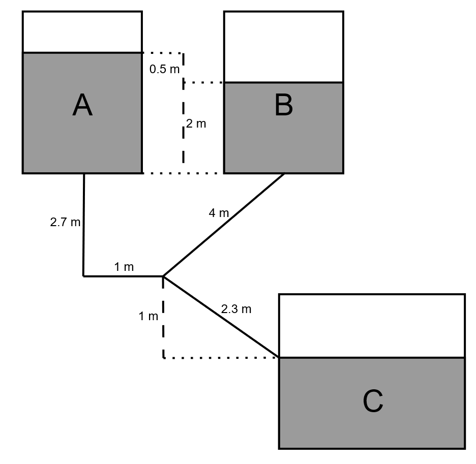

Code
# Paquetes utilizados
from sympy import symbols, Eq, solve
from math import piLuego del proceso final de refinación de petróleo, se obtiene un fluido en fase líquida cuya viscosidad cinemática es de \(\nu=0.691\hspace{1mm}(mm^2/s \hspace{1mm}o\hspace{1mm}cSt)\) y su densidad es de \(\rho=876\hspace{1mm}(kg/m^3)\). En un principio, este fluido es almacenado en dos estanques distintos, para luego terminar en un último estanque de almacenamiento mediante un sistema de tuberías. Considere que la presión en la superficie de los estanques es atmosférica.

Las entradas a las tuberías desde los estanques son afiladas. La tubería que sale del estanque A baja hasta llegar a un codo recto. Finalmente, asuma que las pérdidas asociadas a la intersección son despreciables.
Considere que todas las tuberías son de acero comercial (\(\epsilon=0.046\hspace{1mm}(mm)\)). Además la tubería entre el estanque A y la intersección es de diámetro \(d_A=25\hspace{1mm}(cm)\), la tubería entre B y la intersección tiene \(d_B=27\hspace{1mm}(cm)\) y, por último, la tubería entre la intersección y C es de \(d_C=40\hspace{1mm}(cm)\).
Sea \(P_I\) la presión en la intercepción, adicionalmente, sabemos que todas las presiones de los estanques son atmosféricas. Luego, creamos un sistema de ecuaciones para los puntos importantes.
\[ A-I: \hspace{10mm} (z_I-z_A) + \frac{P_I}{g\rho} + \left(K_{in} + K_{codo} + 4f\frac{L_{A-I}}{d_A} + 1\right)\frac{u_A^2}{2g} = 0 \tag{1}\]
\[ B-I: \hspace{10mm} (z_I-z_B) + \frac{P_I}{g\rho} + \left(K_{in} + 4f\frac{L_{B-I}}{d_B} + 1\right)\frac{u_B^2}{2g} = 0 \tag{2}\]
\[ I-C: \hspace{10mm} (-z_I) - \frac{P_I}{g\rho} + \left(K_{out} + 4f\frac{L_{C-I}}{d_C} + 1\right)\frac{u_C^2}{2g} = 0 \tag{3}\]
En donde \(L\) es el largo que recorre el fluido entre los puntos.
\[ \left(K_{in} + K_{codo} + 4f\frac{L_{A-I}}{d_A} + 1\right)\frac{u_A^2}{2g} - \left(K_{in} + 4f\frac{L_{B-I}}{d_B} + 1\right)\frac{u_B^2}{2g} = (z_A - z_B) \]
\[ \left(K_{in} + 4f\frac{L_{B-I}}{d_B} + 1\right)\frac{u_B^2}{2g} + \left(K_{out} + 4f\frac{L_{C-I}}{d_C} + 1\right)\frac{u_C^2}{2g} = z_B \]
Además, sabemos que la ecuación de continuidad nos dice que:
\[ Q_A + Q_B = Q_C \]
\[ \frac{\pi}{4}d_A^2u_A + \frac{\pi}{4}d_B^2u_B = \frac{\pi}{4}d_C^2u_C \]
Al formar un sistema de 3 incógnitas y tres ecuaciones despejamos para los valores de las velocidades.
# Constantes de enunciado
g = 9.8 #m/s2
rho = 876 #kg/m3
nu = 0.691*10**(-6) #m2/s
# Largos
L_A = 2.7 + 1 #m
L_B = 4 #m
L_C = 2.3 #m
# Diámetros
d_A = 25/100 #m
d_B = 27/100 #m
d_C = 40/100 #m
# Alturas
z_A = 2 + 0.5 + 2.7 + 1 #m
z_B = 2 + 2.7 + 1 #m
# Pérdidas de carga
K_in = 0.5
K_codo = 1.2
K_out = 1
f = 0.0045
# Variables simbólicas, x == u_A, y == u_B, z == u_C
x, y, z = symbols('x y z')
# Sistema de ecuaciones
eq1 = Eq( (1/(2*g))*(K_in + K_codo + 4*f*(L_A/d_A) + 1)*x**2 - (1/(2*g))*(K_in + 4*f*(L_B/d_B) + 1)*y**2, z_A-z_B)
eq2 = Eq( (1/(2*g))*(K_in + 4*f*(L_B/d_B) + 1)*y**2 + (1/(2*g))*(K_out + 4*f*(L_C/d_C) + 1)*z**2, z_B)
eq3 = Eq( (pi/4)*(d_A**2)*x + (pi/4)*(d_B**2)*y, (pi/4)*(d_C**2)*z)
# Solver y obtener únicamente las variables reales positivas.
solutions = solve((eq1, eq2, eq3), (x, y, z))
solution_vector = []
for solution in solutions:
if all(sol.is_real and sol.is_positive for sol in solution):
solution_vector = solution
print("u_A es", solution_vector[0],"m/s, u_B es", solution_vector[1],"m/s y u_C es", solution_vector[2],"m/s.")u_A es 5.01661842550508 m/s, u_B es 6.05885232038120 m/s y u_C es 4.72018116093660 m/s.La velocidad justo después de entrar al estanque C es de \(u_C = 4.72\hspace{1mm}(m/s)\).
Para comprobar si el supuesto de fricción es acertado, podemos calcular el factor de fricción con la ecuación de Nevers, utilizando las velocidades encontradas. A este procedimiento se le conoce como iteración. Donde tomamos una suposición inicial para poder resolver nuestro sistema inicial, y luego comprobamos la exactitud de dicha suposición.
Recordar que \(\epsilon = 0.0.046\).
\[ f = 0.001375\left(1 + \left(2\times10^4\frac{\epsilon}{D} + \frac{10^6}{Re}\right)^{\frac{1}{3}}\right) \]
Vemos los valores de Reynolds.
#Recordar que, del inciso anterior obtuvimos...
u_A = solution_vector[0]
u_B = solution_vector[1]
u_C = solution_vector[2]
reynolds_vector = []
diameter_vector = [d_A, d_B, d_C]
for i in range(0, len(solution_vector)):
reynolds_vector.append(solution_vector[i]*diameter_vector[i]/nu)
print("Re_A es", reynolds_vector[0],", Re_B es", reynolds_vector[1],"y Re_C es", reynolds_vector[2],".")Re_A es 1814984.95857637 , Re_B es 2367424.20622710 y Re_C es 2732376.93831352 .Notamos que para esta iteración, los valores de Reynolds son turbulentos. Procedemos a utilizar la ecuación de Nevers.
f_A = 0.0112332966799599
f_B = 0.0109827877312439
f_C = 0.00980398887211753Notamos que la diferencia entre los factores de fricción obtenidos y el supuesto es notoria. Se recomienda iterar reemplazando \(f\) por un promedio de estos valores, y observar cómo varían las velocidades (Descarge el código y compruebe). ¿Observa alguna diferencia entre el resultado de velocidad incial?